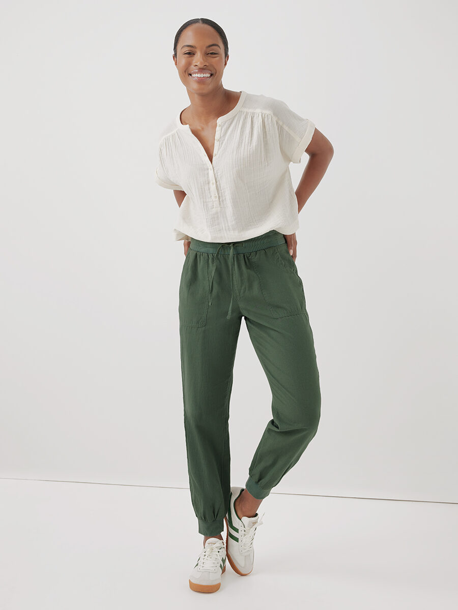
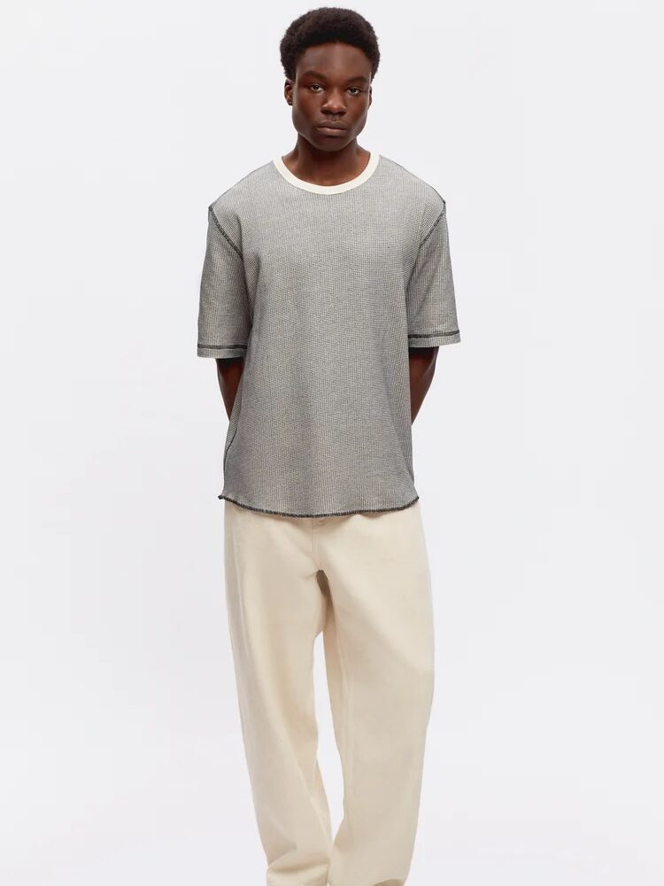
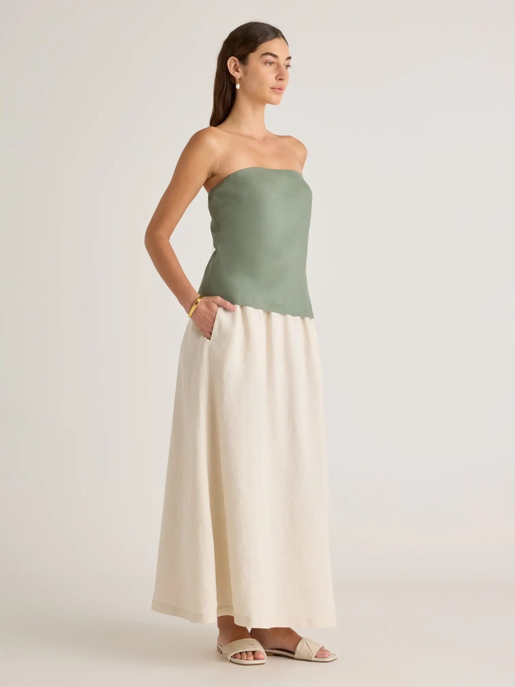
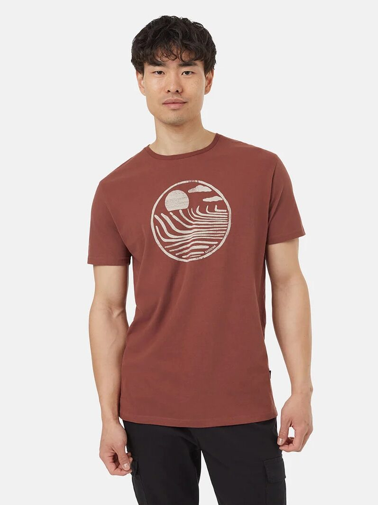
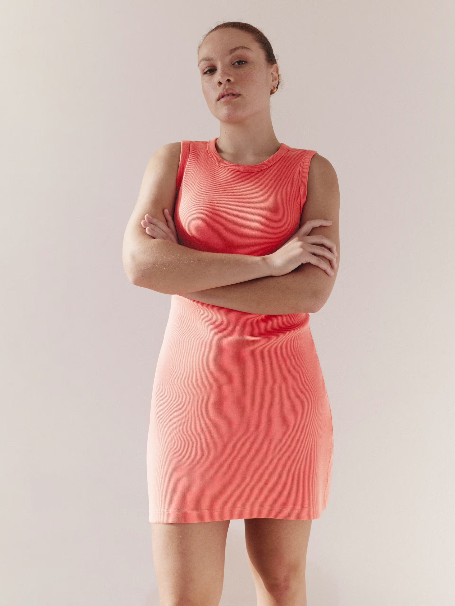
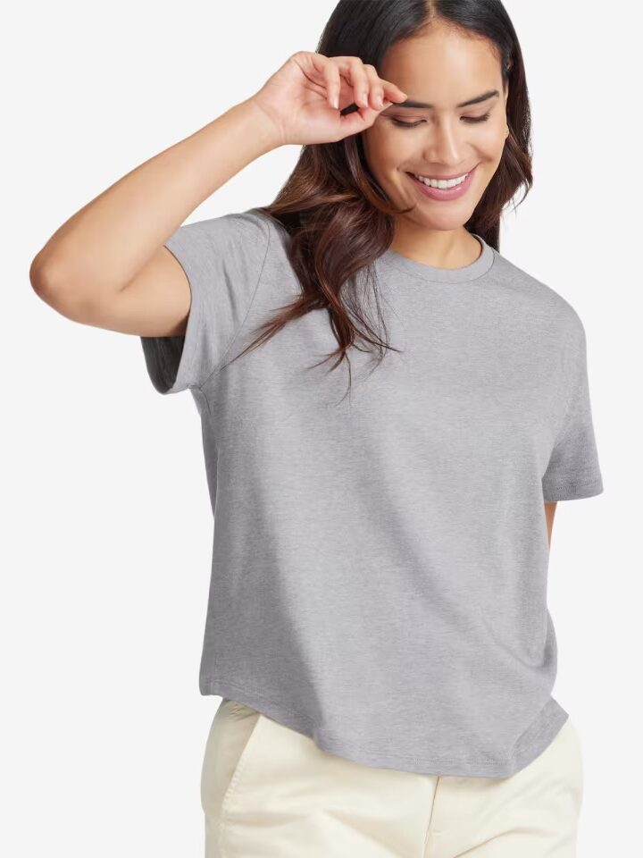
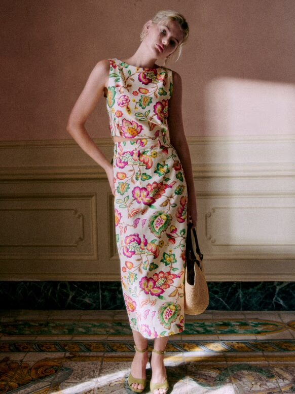

Fashion
Beauty
Lifestyle
Brands
Subscribe
Top Sustainable Fashion Brands You Need to Know

Pact: Fair trade organic cotton basics

Kotn: Egyptian cotton wardrobe staples

Quince: Affordable silk & cashmere

Tentree: Cozy, casual essentials
Fair Indigo: Organic basics

Everlane: Modern staple workwear pieces

Allbirds: Sneakers & men’s activewear

Sezane: Elegant workwear and knitwear